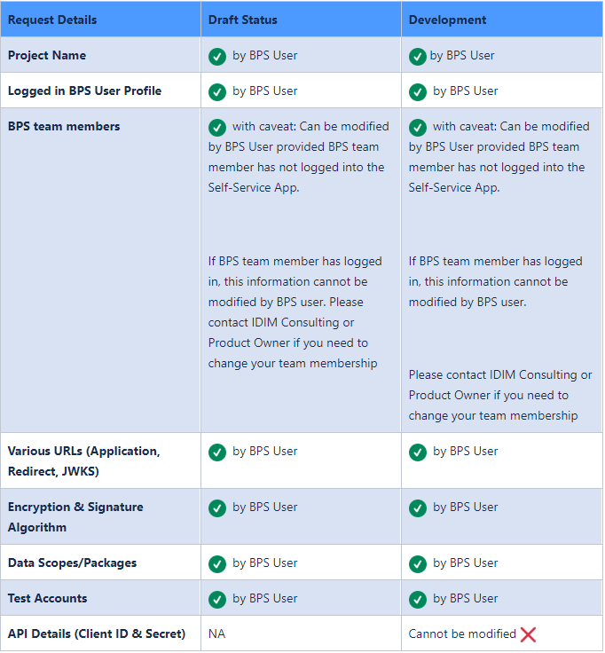
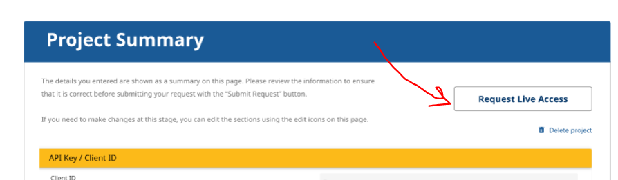
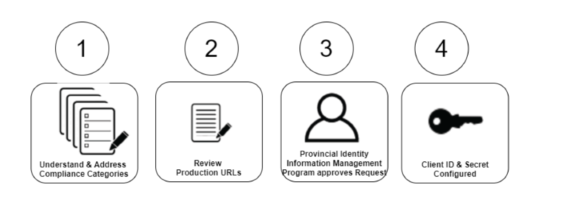
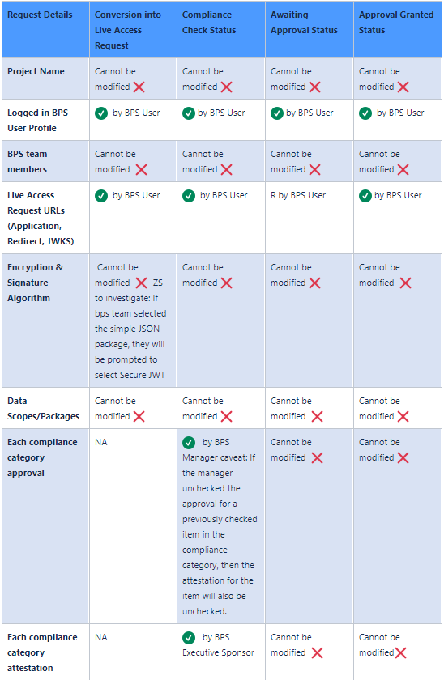

The following sections map your Self Service Project with the technical details needed for your integration with BC Services Card. We suggest the individuals you consider to be your Manager and Developer sit together to review this section.
A BPS team makes use of the self-service application to start the process of requesting Live Access from the Provincial Identity Information Management (IDIM) Program. To keep things simple, we’re asking each BPS for the contact information of three types of team members:
· A developer, who uses the Client ID and secret details to configure the OpenID Connect configuration for the BPS online service;
· A manager, who will be involved in the end to end Live Access Request Process. This person works with both the development and executive team;
· An executive sponsor, who has the accountability and authority to sign off on privacy documents, security documents and service agreements.
The Live Access Request process is designed to enable BPS teams to work at their own pace to understand and address the various categories of compliance before integrating with a live production-ready environment of BC Services Card data. A member of IDIM Program is always available to help BPS clients in completing the integration components.
The BC Services Card self-service application guides the user through each of the required compliance categories to address integral information required by the IDIM Program. The IDIM Program is mandated to provide identity and authentication services using the BC Services Card to support citizen transactions with government services.
Once a user has completed all of the compliance categories, a member of the IDIM Program will provide the BPS team with a data sharing client ID and secret for using the OpenIDConnect (OIDC) API to provide authentication for the live production environment.

After successful experimentation, if BPS team wants to pursue an integration with real citizen BC Services Cards, a BPS team member triggers a promotion of the project’s Development Access Request into a Live Access Request.


